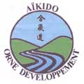

|

|
AÏKIDO ORNE DEVELOPPEMENT Page Web : Actualités
du Club au 11/01/2015 DOJO de Clouange : COMPLEXE SPORTIF à proximité du stade BELLINGER 57185 CLOUANGE |
HORAIRES :
LUNDI - Le 1er et le 3ème de chaque mois :
Approfondissement et perfectionnement - Cours ouverts aux hakamas (minimum 2 années).LUNDI : 2 ième et 4 ième de chaque mois cours adultes débutants et confirmés.
MERCREDI :
- Section Jeunes de 18h à 19h30 au dojo de Clouange avec Franco PADDEU et Alban MALOU.
- Section adultes de 19h30 à 21h30 au dojo de Clouange avec Alain BACCO.
ENSEIGNANTS :
Alain BACCO 5ème Dan BE.
Franco PADDEU 5ème Dan BE.
Alban MALOU 1er DAN BF.
CONTACT :
Le Président: Christophe CHIESA 5, rue des Vergers 57185 Clouange.Tél: 03.87.67.95.68 / port 06.14.81.36.39.Daniel DIJON 2 rue des Peupliers 57185 CLOUANGE.
Tél: 06-17-90-33-36.